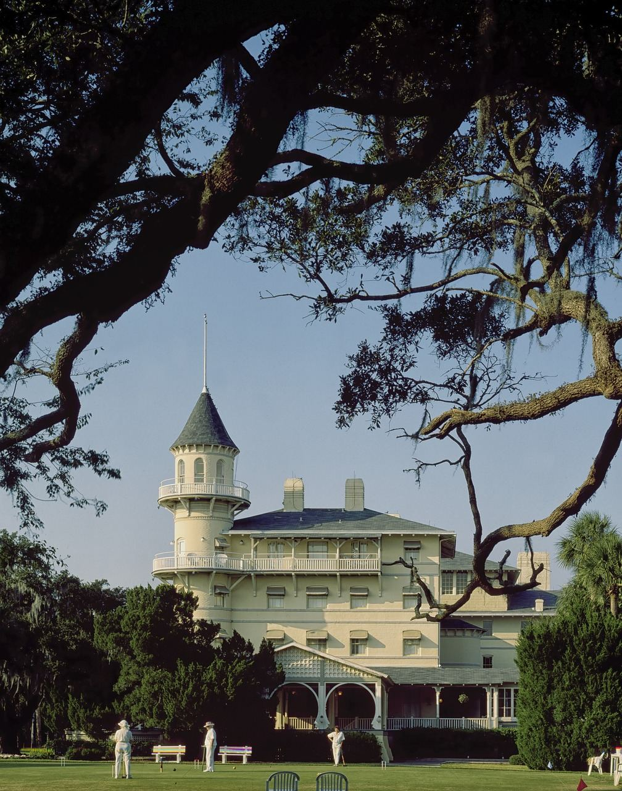

History of our clubSince 1923.
In 1923, the first sod for croquet courts in Yeronga Park was turned with a horse and plough. The inaugural members were notable ladies of the Stephens Shire, only playing Association Croquet sidestyle in white dresses, and they were taught the game by members of East Brisbane Croquet Club.
Since the 1980s, hemlines have shortened and men have enthusiastically embraced the sport. Players can now wear shorts and trousers of various lengths and colours. Mallet design is based on science, and some rules for play have changed.
During the 1990s, Golf Croquet increased in popularity and has developed to a highly competitive level. Now some members also play Ricochet and Gateball.
Over the past 90 years amidst all this change, many things at Stephens have remained the same: good club facilities, firm friendships, and satisfying results in all levels of participation, from Gala Days and interclub Pennants to State representation and World Championships.
Now, croquet is a sport for the 21st century that people of all ages and abilities can enjoy in the beautiful setting of Yeronga Memorial Park.
- 1923Founded
- 4Full-size courts
- 4Play days a week
- 3Croquet games
- 40Clubhouse seats
- 18Founding members
- FreeCome and try
Decade by decade.
- 1923
Mr F. Stimpson, Chairman of Stephens Shire Council, obtained the north east corner of Yeronga Park for croquet lawns, and on 15 October of that year he arrived with horse and plough to prepare the ground. Two lawns were laid, and a small clubhouse was erected. The club commenced with a membership of 18. Mr Stimpson's wife became the first president.
- 1930-1939
The Great Depression had its effect on Stephens, and by the end of the 1930s the club was still in debt to its founders. However, a septic tank had been installed and membership was capped at 41.
- 1939
Membership was recorded as being 94.
- 1940
Wartime. Stringent cost cutting had to take place as money was very tight and the club was still in debt. It was decided to stop paying the tea lady, and members needed to bring their own afternoon tea.
- 1949
The Australian Coal Strike and industrial unrest caused the club to postpone a planned party.
- 1950s
Croquet continued to flourish, and clubhouse additions such as curtains, new paint and shed roofs made postwar life more enjoyable. The wearing of dark coloured cardigans was banned.
- 1961
There was discussion about accepting men into the club, but the matter was deferred. Men had previously been employed as greenkeepers. They were finally admitted as players some time before 1976.
- 1980s
This decade seemed to be a very important and successful one for Stephens. Many championships were played, and QCA and ACC events hosted, with Stephens gaining a reputation for the high quality of its lawns.
- 1987
Golf Croquet was mentioned for the first time. Previously only the traditional game of Association Croquet had been played.
- 1988
The clubhouse was repainted inside and out at a cost of $2,116.
- 1995
The dress code was made more specific: additional colour to be only royal blue, hat to be white with a Stephens hatband, and common rules of decency and decorum to be observed.
- 2005
Mention was made of Ricochet and Gateball, with Golf Croquet numbers growing.
- 2006
After much contention, Golf Croquet players were given full membership.
- 2010
The refurbished kitchen was completed after grant applications were successful.
- 2013
After its beginning 90 years ago as a fashionable game for prewar ladies, croquet is now an international sport played by people of all ages. Stephens had a membership of 41, and boasted a dynamic mix of social and competitive players, several of whom were of national and international standard.